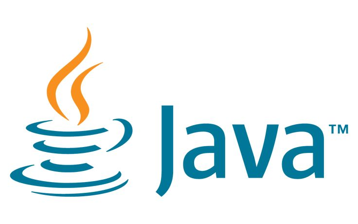

About
Hello👋 I'am Daniel Jabaraj, iam currently pursuing B.E-CSE( Computer Science and Engineering )
Currently Volunteering as a Beta Microsoft Learn Student Ambassador, Community Builder✌
I love to join different community and competition that involve creating something for the society!
Education
As-Salam College of Engineering and Technology Affiliated with Anna University, Tanjavur District
Computer Science and Engineering in Bachelor of Engineering
2022 - 2026( pursuing )
Sambantham Government Highier Secondary School,Sembanarkoil, Mayiladuthurai District
Basic Mechanical Engineering in Vocational ( HSC )
2020 - 2022
Kalaimahal Matriculation School, Sembanarkoil, Mayiladuthurai District
9th - 10th Standard ( SSLC )
2018 - 2020
Volunteering
Microsoft Learn Student Ambassadors
Beta Microsoft Learn Student Ambassador( Community Builder )
Student Ambassadors are a global group of campus leaders who are eager to help fellow students, create robust tech communities and develop technical and career skills for the future.
July 2024 - present
Skills
Programming Languages
Web Technologies


Database

Tools & Platforms


Projects
Principles of UX/UI Design 🔗
this project is to redesign the booking interface to enhance usability, accessibility, and overall user satisfaction. By applying principles of UI/UX design, we will create a streamlined, visually appealing and efficient booking system that meets the needs of diverse users, ensuring a positive interaction with the Little Lemon brand by using Figma Software.
This Project is given by Meta in Coursera for course Completion.